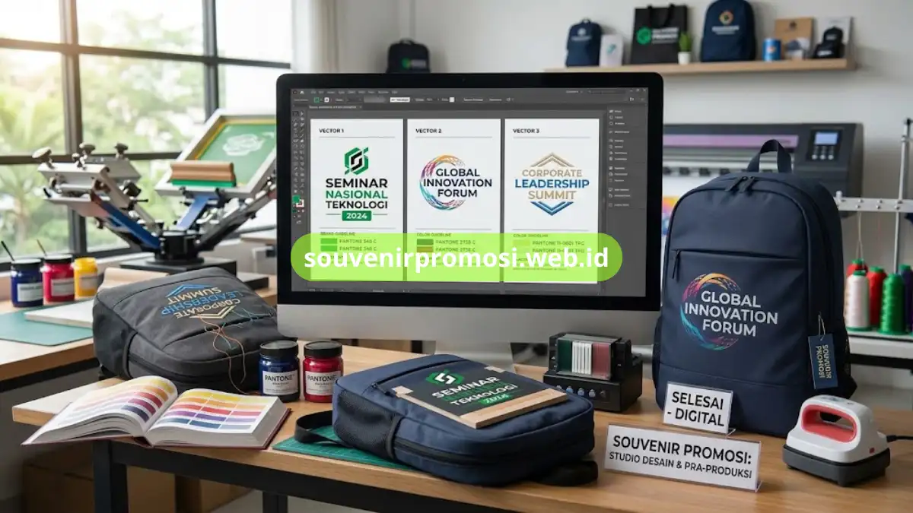

Custom logo tas ransel seminar untuk souvenir promosi adalah proses penempatan identitas visual instansi pada tas melalui teknik sablon, digital printing, atau bordir. Souvenir Promosi menyediakan seluruh teknik ini dengan penyesuaian warna sesuai brand guideline instansi pemesan.
Pemilihan teknik custom logo yang tepat menentukan tampilan akhir dan daya tahan tas ransel seminar sebagai souvenir promosi instansi, sehingga penting bagi procurement dan panitia seminar untuk memahami karakteristik masing-masing teknik sebelum melakukan pemesanan dalam jumlah besar.
Poin Penting
- Tersedia tiga teknik utama custom logo: sablon manual, digital printing, dan bordir.
- Setiap teknik memiliki karakteristik ketahanan dan tampilan visual berbeda.
- Warna tas dan warna logo dapat disesuaikan dengan brand guideline instansi.
- Proses custom logo membutuhkan file desain dengan format dan resolusi tertentu.
- Katalog opsi custom logo tersedia lengkap di situs Souvenir Promosi.
Daftar Isi
Teknik Sablon Manual untuk Logo Tas Ransel Seminar
Sablon manual menggunakan cetakan screen untuk menempelkan tinta logo pada permukaan tas ransel seminar. Teknik ini cocok untuk logo dengan warna terbatas, umumnya satu hingga tiga warna dominan sesuai identitas instansi.
Karakteristik Visual Sablon Manual
Hasil sablon manual memberikan warna solid dan tegas, cocok untuk logo instansi dengan desain sederhana namun tetap membutuhkan tampilan tegas di permukaan tas. Teknik ini juga umumnya lebih efisien untuk pemesanan dalam jumlah besar dengan desain logo yang sama.
Teknik Digital Printing untuk Logo Multiwarna
Digital printing memungkinkan pencetakan logo dengan gradasi warna dan detail visual yang lebih kompleks dibanding sablon manual, cocok untuk instansi dengan logo full color atau elemen grafis yang rumit.
Kesesuaian Digital Printing dengan Bahan Parasut dan Kanvas
Teknik digital printing bekerja optimal pada permukaan bahan yang halus seperti parasut, namun juga dapat diaplikasikan pada kanvas dengan hasil warna yang tetap tajam untuk kebutuhan souvenir promosi korporat.
Teknik Bordir untuk Kesan Logo Premium
Bordir menggunakan benang untuk membentuk pola logo secara timbul pada permukaan tas, memberikan kesan lebih premium dan tahan lama dibanding sablon maupun digital printing.
Ketahanan Bordir terhadap Pencucian dan Pemakaian Jangka Panjang
Logo hasil bordir memiliki ketahanan lebih tinggi terhadap gesekan dan pencucian dibanding sablon, sehingga direkomendasikan untuk instansi yang menginginkan souvenir promosi bertahan lama sebagai barang koleksi peserta seminar.

Penyesuaian Warna Tas dan Logo dengan Brand Guideline Instansi
Souvenir Promosi menyediakan pilihan warna dasar tas yang dapat dipadukan dengan warna logo sesuai brand guideline instansi, sehingga konsistensi identitas visual tetap terjaga di setiap elemen souvenir promosi yang dipesan.
Kombinasi Warna untuk Instansi dengan Standar Branding Ketat
Instansi dengan standar branding ketat dapat mengajukan kombinasi warna khusus, termasuk penyesuaian kode warna tertentu, agar tas ransel seminar selaras dengan seluruh materi promosi instansi lainnya.
Format File Desain yang Dibutuhkan untuk Proses Custom Logo
Proses custom logo pada tas ransel seminar umumnya membutuhkan file desain vektor beresolusi tinggi agar detail logo tetap tajam saat dicetak dalam ukuran yang disesuaikan dengan permukaan tas. Instansi yang belum memiliki file vektor dapat berkonsultasi dengan tim desain Souvenir Promosi untuk proses digitalisasi ulang logo.
Segera cek katalog custom logo tas ransel seminar dan ajukan pemesanan sekarang melalui souvenirpromosi.web.id untuk kebutuhan souvenir promosi instansi Anda.
Pemilihan teknik custom logo yang tepat, baik sablon, digital printing, maupun bordir, menentukan tampilan akhir dan daya tahan tas ransel seminar sebagai souvenir promosi instansi. Dengan pilihan teknik yang beragam serta penyesuaian warna sesuai brand guideline, instansi dapat menghadirkan souvenir promosi yang konsisten dengan identitas visual korporat.
Souvenir Promosi siap membantu mewujudkan custom logo tas ransel seminar berkualitas melalui proses konsultasi desain yang mudah dan cepat. Kunjungi katalog lengkap di souvenirpromosi.web.id dan pesan sekarang untuk kebutuhan souvenir promosi instansi Anda.